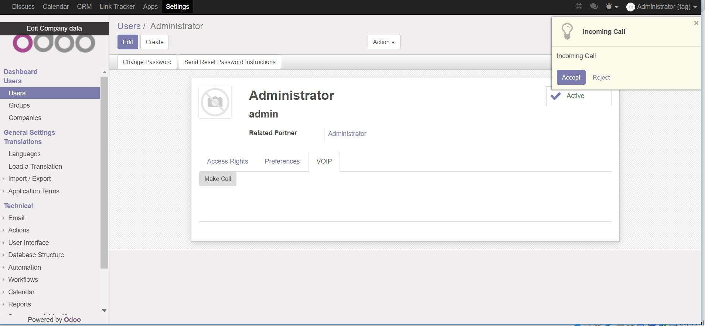

Description
Make video calls with other users within your system
*IMPORTANT* camera access requires https for Google Chrome web browser
Instructions
1. Click on the phone icon in the top right hand corner
2. You can select between making a video call, audio only call or screensharing
3. The other user will receive a notification to answer the call
4. Both users have to accept access to camera/audio
5. Once both users have accepted media access the call will begin

Ringtone courtesy of zedge.net
For people interested in calling mobiles please consider checking out voip_sip_webrtc_twilio
For those interested in making automated calls there is a a few beta modules for that.
voip_sip_webrtc_transcode (for converting mp3's into streaming formats)
voip_sip_webrtc_transcription (Sends recording through to voice transcription services)
voip_sip_webrtc_voice (for voice synthesis with dynamic placeholders)
Find a bug or need support? send an email to steven@sythiltech.com.au